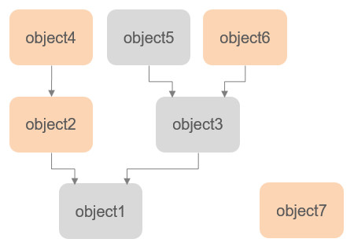

|
CollectionsA collection is a user-defined collection of scene objects. Both collections and scene objects are entities. Collections are useful when referring to several objects like a robot for instance, when performing a specific operation, such as checking for collision between two robots for example. Collections are collidable, measurable and detectable entities. This means that collections: Even if a collection itself is collidable, measurable and detectable, this doesn't mean that all objects contained in the collection are collidable, measurable and detectable: A collection can however override the collidable, measurable and detectable properties of its objects, when creating the collection with sim.scene:createObject. A collection is defined by one or several items that can be combined in an additive or subtractive manner. The following items are supported: A collection is not static, and is constantly evaluated/updated to determine its containing objects (refer also to collection.objects). A given collection can also be defined in many different ways, depending on specific needs:  [Example collection containing 4 objects (the colored objects] The above collection could be defined as a combination of 4 items, resulting in the following code: #python
# using sim-2
# Collection defined as: <object2> + <object4> + <object6> + <object7>
object2 = sim.self:getObject('/object2')
object4 = sim.self:getObject('/object4')
object6 = sim.self:getObject('/object6')
object7 = sim.self:getObject('/object7')
collection = sim.scene:createObject({'type': 'collection'})
collection:addItem(object2)
collection:addItem(object4)
collection:addItem(object6)
collection:addItem(object7)
--lua
sim = require('sim-2')
-- Collection defined as: <object2> + <object4> + <object6> + <object7>
local object2 = sim.self:getObject('/object2')
local object4 = sim.self:getObject('/object4')
local object6 = sim.self:getObject('/object6')
local object7 = sim.self:getObject('/object7')
local collection = sim.scene:createObject({type = 'collection'})
collection:addItem(object2)
collection:addItem(object4)
collection:addItem(object6)
collection:addItem(object7)
But a similar collection could also be defined as a combination of the following 3 items too: #python
# using sim-2
# Collection defined as: <all objects> - <tree starting at object1> + <object6>
object1 = sim.self:getObject('/object1')
object6 = sim.self:getObject('/object6')
collection = sim.scene:createObject({'type': 'collection'})
collection:addItem(-1, {'mode': 'all'}
collection:removeItem(object1, {'mode': 'tree'}
collection:addItem(object6, {'mode': 'single'}
--lua
sim = require('sim-2')
-- Collection defined as: <all objects> - <tree starting at object1> + <object6>
local object1 = sim.getObject('/object1')
local object6 = sim.getObject('/object6')
local collection = sim.scene:createObject({type = 'collection'})
collection:addItem(-1, {mode = 'all'})
collection:removeItem(object1, {mode = 'tree'})
collection:addItem(object6, {mode = 'single'})
|